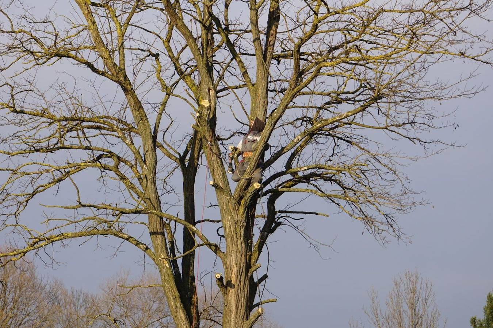
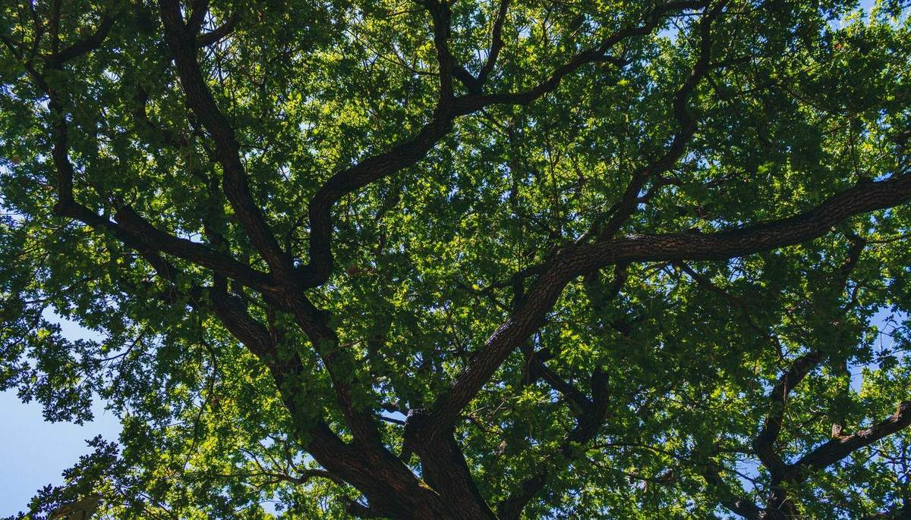
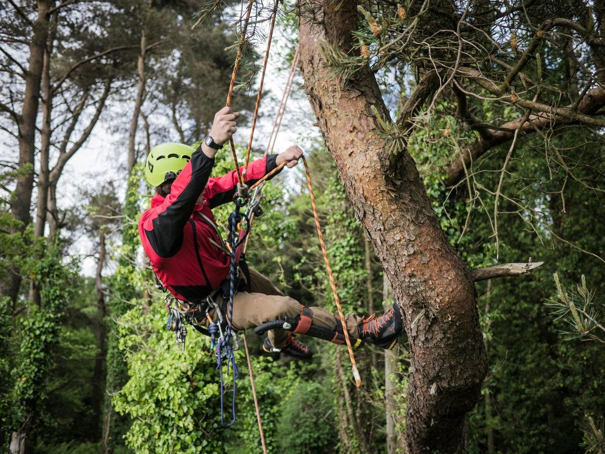
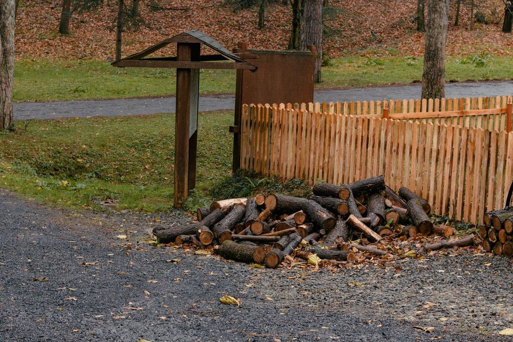

Careful tree work.
High Limb Tree Service takes down, trims and cleans up trees for homes in and around Dobson, NC. We look first, cut safely and rake up before we go.

Roped in high in the crown, cutting the limbs back one at a time.

What we do
From the top of the crown down to the last rake of the yard.
Tree removal
Dead, dying or leaning trees taken down. Close to the house, they come down in pieces.
Trimming
Limbs lifted off the roof, back from the driveway and up out of the way of the mower.
Dead wood
Dead limbs cut out of the crown before they come down on their own.
Storm cleanup
Trees and big limbs down after wind, ice or a heavy rain.
Saving the tree
Not every rough looking tree has to come down. If a good trim will do the job, we will tell you so.
When to call about a tree
Most trees give a warning before they drop a limb. These are the ones worth a phone call.
- Dead branches up top, or bare limbs in the middle of summer
- A lean that was not there last year, or soil lifting on one side
- Cracks or splits running down the trunk
- Mushrooms or soft, crumbly wood at the base
- Limbs rubbing the roof or hanging over the house
- A tree that dropped big limbs in the last storm
Seeing one of these does not mean the tree has to go. It means the tree needs a look.
From the call to the cleanup

You call or send the form
Tell us where the tree is and what you are seeing. A photo helps.
We walk the tree with you
Trunk, crown and everything it could land on all get a look. You point out what has to stay safe.
We plan every cut
Where each piece comes down, and how it gets lowered on ropes when there is no room to drop it.
We cut, lower and clean up
The job is not finished until the yard is.
Tree down after a storm?
Stay back from it, and from any wire it touched. If a power line is down, call the power company first. Then call us and we will talk through what comes next.
Call or text 336 555 0162
After the last cut
Brush goes through the chipper. The wood is cut to rounds and stacked where you want it, or hauled away. Then we rake.
Want the wood for the fire pit? Say so when you call.
Questions people ask
What should I tell you when I call?
Where the tree is, about how tall, what it is close to and what worries you about it. Text a photo too, if you have one.
Does the whole tree have to come down?
Not always. Taking out dead wood or a good trim can be enough. We look before we say.
The tree is right next to the house. Now what?
That is the kind of job we plan most carefully. Pieces come down on ropes instead of falling, one at a time.
What happens to the wood?
We can cut it to rounds and leave it stacked for you, or take it with us. Tell us which.
Which tree is it?
Leave a name, a phone number and where the tree stands. We call back to talk it over.
- Call or text336 555 0162
- Based in
Dobson, NC
Got it. Thanks.
We will call you about the tree soon.
This is a sample site, so nothing was actually sent.